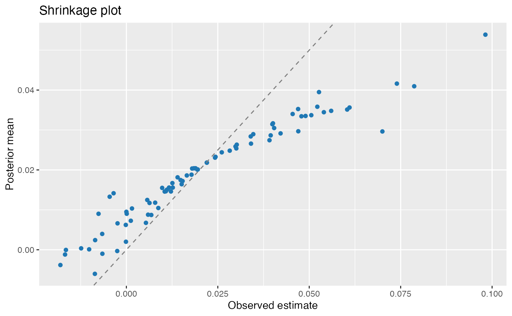

S3 ggplot2::autoplot() method for the package's monolithic eb_fit
container (produced by eb(), eb_test(), or eb_vam()). The method keeps
the original simple diagnostic views while adding routes into the
companion-quality plot helpers and high-level workflow dashboards.
Usage
autoplot.eb_fit(
object,
type = c("all", "results", "diagnostics", "prior", "mixing", "posterior", "shrinkage",
"shrinkage_comparison", "reliability", "histogram", "fdr", "pvalue", "qvalue",
"frontier", "decision"),
characteristic = "estimate",
scale = c("theta", "r"),
metric = c("p", "q"),
grid = NULL,
comparison = c("linear", "precision_adjusted"),
combine = c("patchwork", "list"),
...
)Arguments
- object
An
eb_fitobject as produced byeb(),eb_test(), oreb_vam().- type
Plot type to construct. One of:
"all"Falls back to
plot.eb_fit()withtype = "diagnostic"(a multi-panel base-graphics overview). Returnsinvisible(NULL)."results"High-level results dashboard from
plot_results()."diagnostics"High-level diagnostic dashboard from
plot_diagnostics()."prior"or"mixing"Companion-quality prior/mixing plot from
plot_mixing_distribution()."posterior"Companion-quality posterior overlay from
plot_posterior_overlay()."shrinkage"Backward-compatible shrinkage scatter of observed estimates against posterior means.
"shrinkage_comparison"Companion-style nonparametric-versus-linear comparison from
plot_shrinkage_comparison()when comparison columns are available."reliability"Backward-compatible scatter of standard error against shrinkage weight.
"histogram"Histogram of the observed estimates \(\hat\theta_j\).
"fdr","pvalue", or"qvalue"FDR histogram from
plot_fdr_histogram()."frontier"Decision frontier from
plot_decision_frontier(); requiresgrid."decision"High-level decision dashboard from
plot_decision(); requiresgrid.
- characteristic
Length-one plot label passed to companion plot helpers. Use labels such as
"white"or"male"for Walters discrimination figures.- scale
Prior/mixing scale for
type = "prior"or"mixing".- metric
Histogram metric for
type = "fdr"; ignored by the explicit aliasestype = "pvalue"andtype = "qvalue".- grid
Posterior decision-surface grid for
type = "frontier"andtype = "decision". It is never generated automatically.- comparison
Shrinkage comparator for
type = "shrinkage_comparison".- combine
Dashboard return mode passed to
plot_results(),plot_diagnostics(), andplot_decision().- ...
Additional arguments forwarded to the selected plot helper, or to the base plotting fallback when
ggplot2is unavailable.
Value
A ggplot object for single-panel type values, a patchwork/list
dashboard for workflow type values, or invisible(NULL) when delegating
to the base plotting fallback.
Details
autoplot.eb_fit() is now the ergonomic bridge from fitted EB workflows to
the explicit companion plot functions. It preserves the old "all" base
diagnostic fallback and the simple "shrinkage", "reliability", and
"histogram" views, while explicit companion routes require the same
semantic inputs as their underlying helpers. In particular, frontier and
decision dashboards require a supplied posterior grid. These routes are
ergonomic workflow views by default; exact Lane A companion parity should use
the specialized helpers directly with protected target_id values and
matching source receipts. VAM autoplot routes remain deferred or
simulation-only according to the underlying VAM helpers.
N-18 binding rationale
Per redesign decision N-18, autoplot.eb_fit is the SINGLE statically
exported S3 method registered against ggplot2::autoplot in NAMESPACE
(export(autoplot.eb_fit)). All other autoplot.* methods in the package
are runtime-registered at .onLoad() via the in-house
.eb_register_s3_method() helper in R/zzz.R. The static export is kept
for v1 backward compatibility – in v1, ebrecipe::autoplot.eb_fit() was
directly callable by name, and downstream code (including the Walters
(2024) replication companion) relies on that binding. The
runtime-registration pattern is preferred for new methods because it lets
ggplot2 stay in Suggests without forcing a hard Depends on it
(DEC-124-1 "zero CRAN deps").
See also
plot.eb_fit() for the full base-graphics catalogue including
classification-dependent views; eb(), eb_test(), eb_vam() for the
workflows that produce eb_fit objects; ggplot2::autoplot() for the
generic.
Examples
# \donttest{
if (requireNamespace("ggplot2", quietly = TRUE)) {
data("krw_firms", package = "ebrecipe")
fit <- eb(
x = utils::head(krw_firms$theta_hat_race, 80),
s = utils::head(krw_firms$se_race, 80),
method = "linear",
control = eb_control(standardize = FALSE, precision_model = "none")
)
p <- ggplot2::autoplot(fit, type = "shrinkage")
print(p)
panels <- ggplot2::autoplot(
fit,
type = "results",
characteristic = "white",
combine = "list"
)
names(panels)
}

#> [1] "prior" "posterior" "forest"
# }